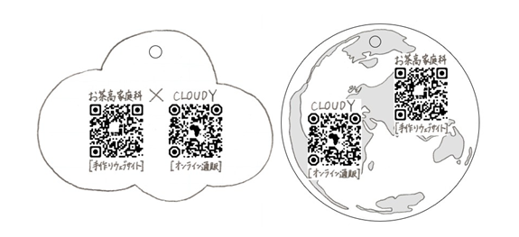

タグ・リーフレット
＃工夫した点
＃児童労働
#工夫した点
カカオペーパー
スマートパピエ カカオミックス使用
チョコレート製造時に生じて、通常は捨ててしまう
「カカオハスク(カカオ豆の皮)」が配合されている
デザイン

雲の形は、「CLOUDY」の企業名から、
円形は地球からインスピレーションを得た
⇒アフリカと日本のつながりを表現
今回は使用しなかった
手書きで原画を作成し、印刷する
QRコード
アフリカと日本の地図をあしらった
デザインのQRコードを作成
お客様の興味を引くための工夫である
紐
CLOUDYの残布を使用することで、
資源の有効活用を行う
カラフルなため、鮮やかな印象になる
リーフレット

「環境に配慮したリーフレット」
・緑茶飲料の製造時に排出される国産茶葉の茶殻
が原料のティーリニックスという紙を使用
・ゴミを出さない長方形
・財布に入るサイズ
・抗菌・消臭作用がある
＃児童労働
エシカルな商品を目指すため、タグにカカオペーパーを使用しました。
カカオの実の収穫と児童労働の間には密接な関係があります。
不当な労働をさせられている子どもたちのために、私たちは一体何ができるのでしょうか？
下の児童労働についてのスライドを通して考えてみましょう！